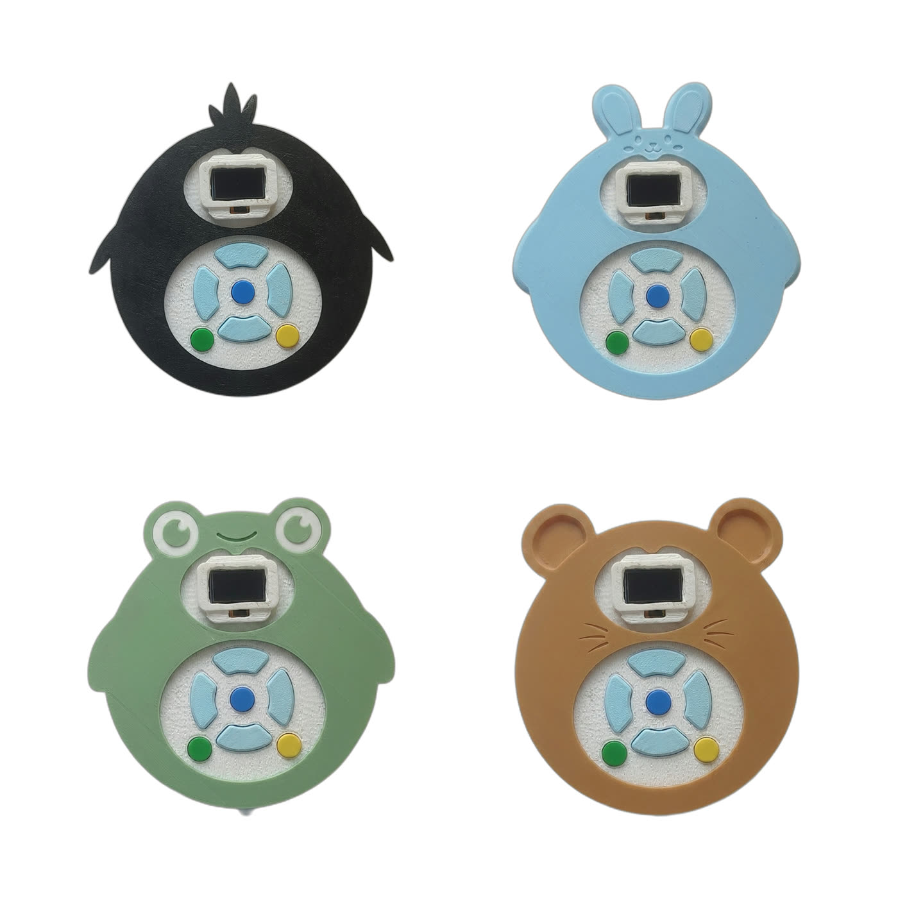
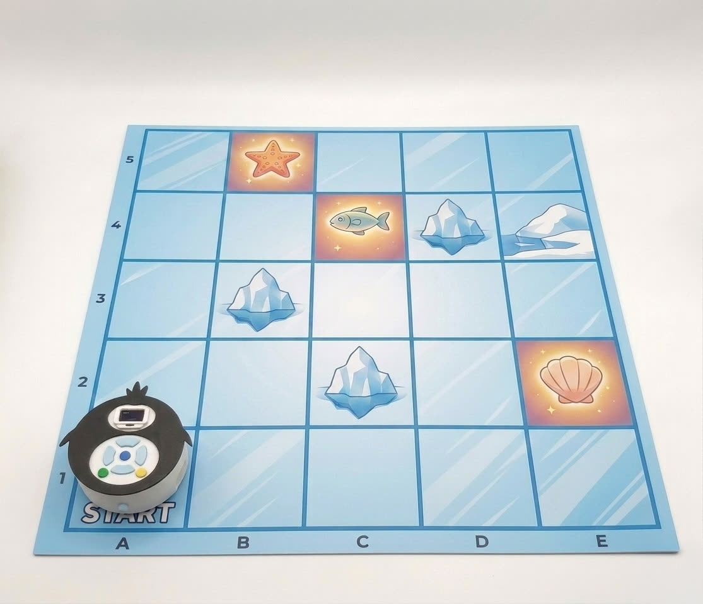

In development
No-code Robot
Pre-primary · computational thinking through play
Concept & design lead · electronics R&D owns the board
A robot that builds computational thinking in 4-6 year olds. Children sequence directional steps with buttons and watch it route across a printed map. I own the concept, the interaction model and the physical design; electronics R&D, who report to me, own the board.
The hard design problem is orientation: keeping the cognitive load right for a child still learning to track a turn. We tested the first prototype in multiple kindergartens.

